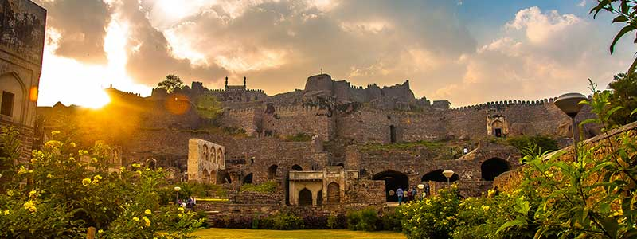
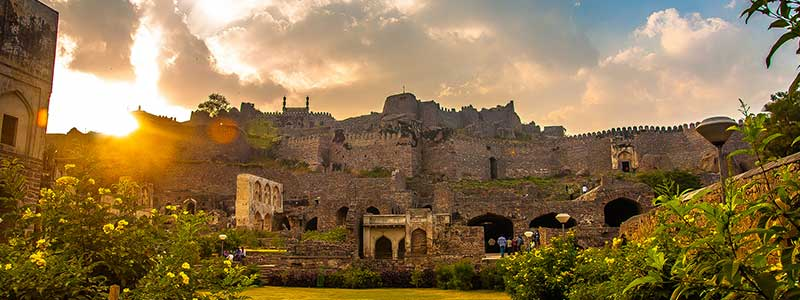

Hyderabad is the capital and largest city of the Indian state of Telangana and the de jure capital of Andhra Pradesh.
It occupies 650 km2 (250 sq mi) on the Deccan Plateau along the banks of the Musi River, in the northern part of Southern India.
With an average altitude of 542 m (1,778 ft), much of Hyderabad is situated on hilly terrain around artificial lakes, including the Hussain Sagar lake, predating
the city's founding, in the north of the city centre.
According to the 2011 Census of India, Hyderabad is the fourth-most populous city in India with a population of 6.9 million residents within the city limits,
and has a population of 9.7 million residents in the metropolitan region, making it the sixth-most populous metropolitan area in India.
With an output of US$74 billion,Hyderabad has the fifth-largest urban economy in India.
Until the 19th century Hyderabad was known for the pearl industry and was nicknamed the "City of Pearls", and was the only Golconda Diamonds trading centre in the world.
Many of the city's historical and traditional bazaars remain open. Hyderabad's central location between the Deccan Plateau and the Western Ghats, and industrialisation throughout
the 20th century attracted major Indian research, manufacturing, educational and financial institutions. Since the 1990s, the city has emerged as an Indian hub of pharmaceuticals
and biotechnology. The formation of special economic zones and HITEC City dedicated to information technology has encouraged leading multinationals to set up operations in Hyderabad.
 
